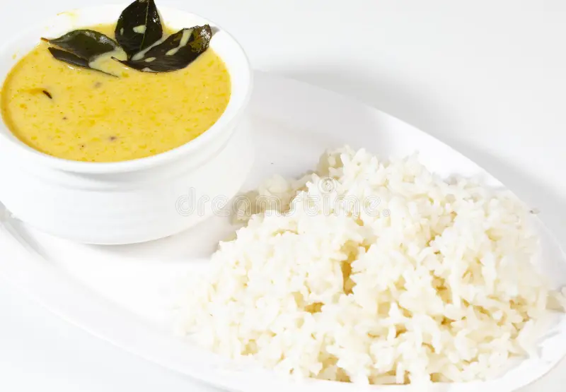

Curry Chawal is Ready

Ingredients
- chana daal
- masoor daal
- chawal
- termeric powder
- red chili powder
- curry patta
- onion paste
- ginger and garlic paste
- salt
- jeera
- tej patta
- curd
Instructions
Make the Kadhi:
- In a bowl, whisk together yogurt, gram flour, green chilies, turmeric powder, red chili powder, coriander powder, and salt until smooth.
- Heat oil in a kadai. Add mustard seeds and let them splutter. Add cumin seeds and asafoetida.
- Gradually pour the yogurt mixture into the kadai, stirring continuously to avoid lumps.
- Cook on low-medium heat, stirring occasionally, until the kadhi thickens and comes to a boil.
- Simmer for 10-15 minutes, stirring occasionally. Garnish with coriander leaves.
Make the Pakoras (optional):
- In a bowl, mix gram flour, red chili powder, turmeric powder, salt, and water to form a batter.
- Add chopped onion (optional) to the batter.
- Heat oil in a deep pan.
- Drop spoonfuls of batter into the hot oil and fry until golden brown and crispy.
- Drain on paper towels.
Make the Rice:
- Wash the rice thoroughly and soak for 30 minutes.
- Drain the rice and cook it in a pressure cooker with 4 cups of water for 2-3 whistles.
- Heat ghee in a pan, add cumin seeds, and let them splutter.
- Add the cooked rice and fluff it up gently.
Enjoy your homemade Kadhi Chawal!